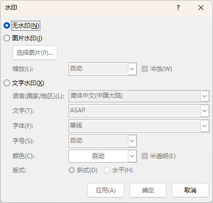
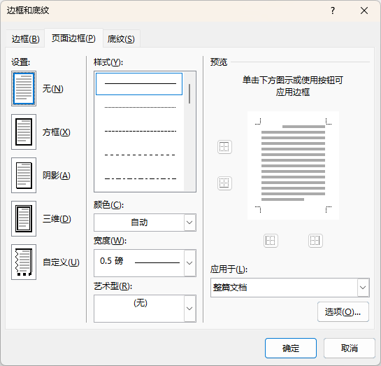

设计
Designe
- 内容 Contents
- 主题 Themes
- 文档格式 Document Formatting
- 页面背景 Page Background
主题 Themes
- 一组预设的整体视觉方案，包括：
配色方案（颜色组合）
字体组合（标题字体 + 正文字体）
效果方案（如阴影、渐变、线条等图形效果）
- 主题作用于整个文档，影响所有基于该主题的样式（如标题1、正文、引用等），也影响图表、SmartArt、表格等对象的默认外观
- 每个主题都有名字
- 创作 Word 时 首先 要做的事情：全局设计
- 所有的操作都是全局性的
- 创作过程可以随时实现"一键换肤"
- 等级考试的最爱
文档格式 Document Formatting
- 微调文档样式
- 系统预置的的很多格式
- 鼠标放上去可以查看每个格式的名字，如基本（时尚）
- 等级考试的最爱
- 先选择“主题”，再微调“文档样式”
颜色和字体
- 颜色 Colors
- 提供不同的调色卡
- 一键换肤，特别是指定了主题的情况下
- 字体 Fonts
- 可以分别指定中文和西文的标题和正文字体
页面背景 Page Background
页面背景
- 水印 Watermark
- 在页面内容后面添加阴影文字
无水印
图片水印
文字水印

水印
- 页面颜色 Page Color
- 页面的背景颜色
纯色
渐变 Gradient
材质 Texture
图案 Pattern
自定义图片 Picture
- 页面边框 Page Borders
- 高频操作
- 和普通元素的"边框"和"底纹"共用一个"边框和底纹"对话框
- 使用时，要切换到对应的选项卡

"边框和底纹"对话框
- 基本步骤
- 打开"边框和底纹"对话框
- 切换到"页面边框"选项卡
- 选择样式
- 选择颜色
- 选择宽度/粗细
- 选择艺术性/外观
- 应用于"整篇文档"
- 确定
- 查看效果，并根据需要调整
练习 Drill
页面设计
- 打开前面创建的个人文档
- 选择主题
- 选择样式
- 设置水印 - 使用学号
- 设置背景颜色
- 设置页面边框
- 保存并关闭